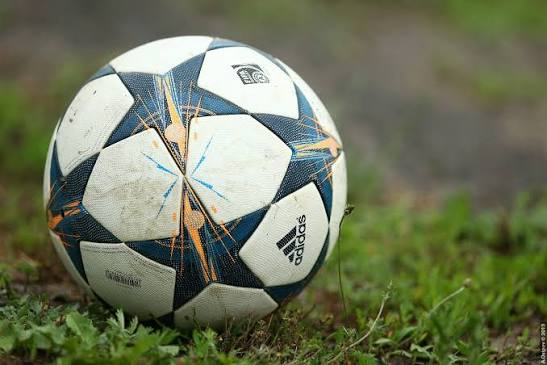

El 26 d'octubre de 2026 Harry Kane, del Bayern de Munic, va guanyar la Pilota d'Or a la gala de Londres. Lamine Yamal va guanyar el Trofeu Kopa i Alexia Putellas la Pilota d'Or femenina.

El 26 d'octubre de 2026 Harry Kane, del Bayern de Munic, va guanyar la Pilota d'Or a la gala de Londres. Lamine Yamal va guanyar el Trofeu Kopa i Alexia Putellas la Pilota d'Or femenina.
Més informació: Bayern de Munic